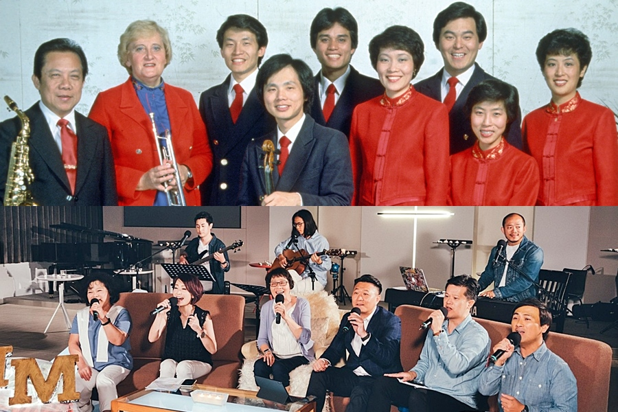
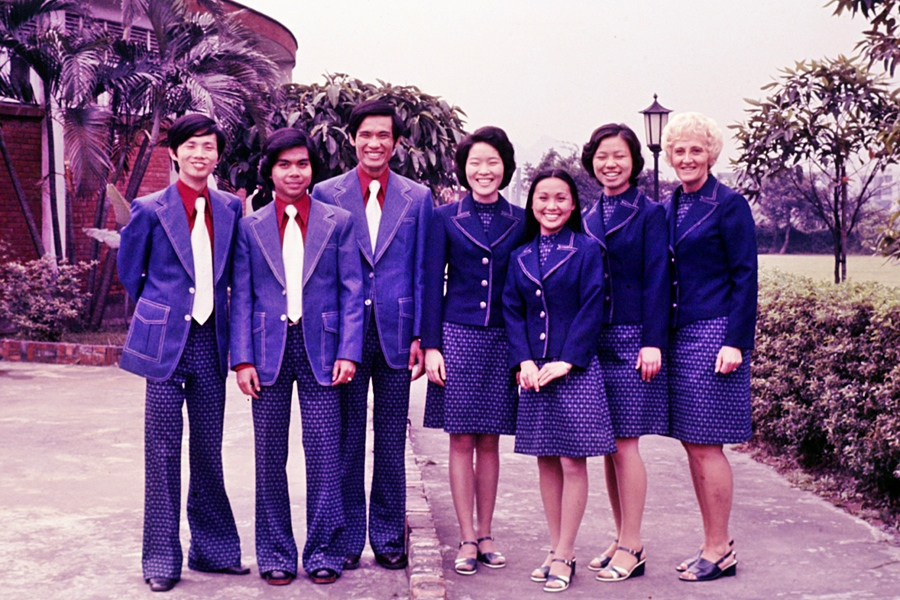
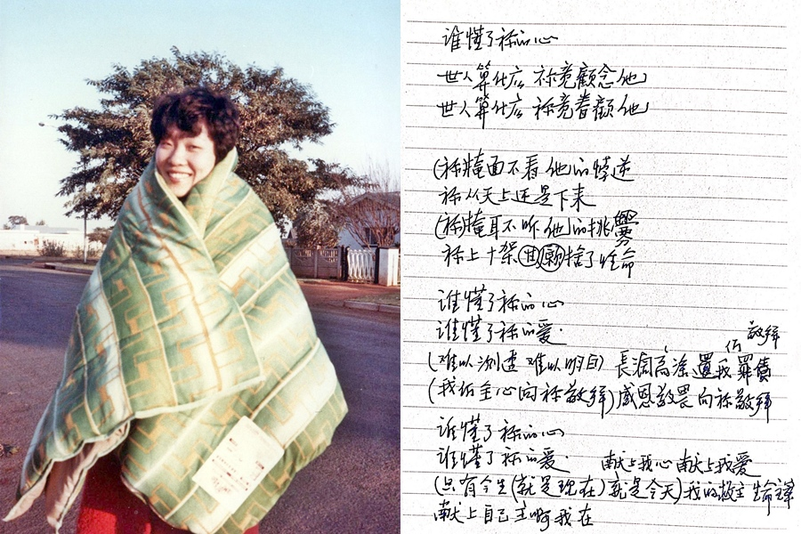
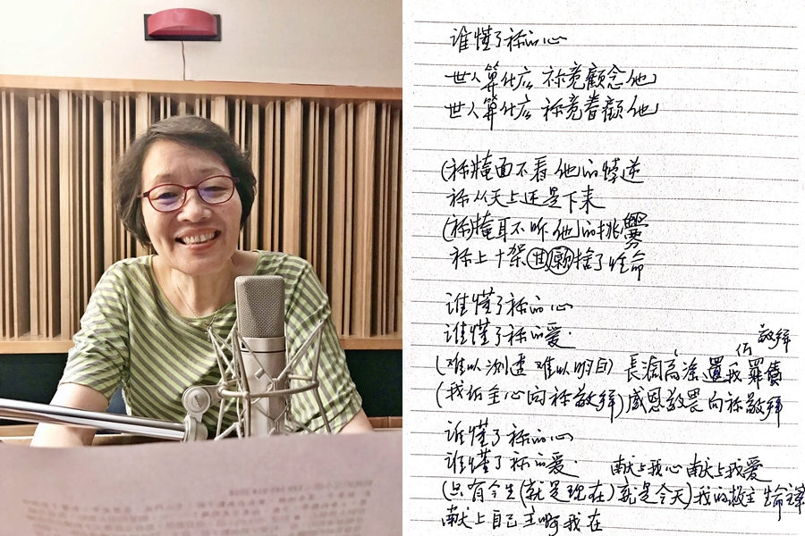

|
|
【信徒起來】 |
|
|
嶄新的時代已經來到， |
|
|
|
|
|
|

https://youtu.be/qFPxVBWAx2E -
葉薇心 天韻資深作詞人 Sing4Jesus為耶穌歌唱 宣傳
https://youtu.be/yveJFkC_MSs
我和三顆「心」的故事 ─ 謝冰心、葉薇心、李碧心 -余也魯
第 2438 期（2011 年 5 月 15 日） ◎ 文林 ◎ 余也魯
分享：  Whatsapp ::
Whatsapp ::  電郵 :: 臉書 ::
電郵 :: 臉書 ::  推特
推特
第一位是謝冰心。冰心一九零零年出生於一個基督徒家庭，畢業於燕京大學獲文學學士學位。一九二六年，在美國衛斯理女子大學讀畢碩士課程（宋美齡也是這間大學畢業的，但比冰心早十年）。她的中學，大學一直到研究院，都是在教會學校，而她成名的幾部作品，都是學生時代寫的。這位虔誠的基督徒，在她的作品中，諸如《寄小讀者》通訊散文，小詩《繁星》，和不少小說，都是以愛為核心，這些，大家都耳熟能詳，不用我在這裡嘮叨了。
我遇見冰心時，她已經八十八歲了，那是一九八八年的一個夏天，我去福建廈大和傳播系的第一屆新生見面，剛剛作完一次演講。突然傳來「冰心來了廈大」的消息，我隨口說了一聲希望能見到她。讀過她寫的書，能有機會跟她見個面，當然是極難得的事。她是福建長樂人，那時大家正在商量為她建個記念館，把她的作品、手稿藏在那裡供後人瀏覽。她在文革時期，因信仰關係曾被送入牛棚，下放湖北，到一九七一年才得到平反，回到北京從事翻譯，恢復寫作。
我表達希望一見的願望不久，一位老師滿臉笑容向我奔來，說是已安排好和「冰心老人」會見，在午飯前談幾句。我就這樣見到了冰心女士。她一頭短髮，已半銀白，穿著一套淺黃色夏布短裝，一臉慈祥。她這時陷在一大堆女生的包圍中，由兩個女學生攙著，想要立起來和我見面。
我連忙奔過去和她握手，請她坐下，她一開口就說：「她們要我教她們怎樣寫作。」我說：「那我也要來聽。」她笑了笑，說：「要勤寫才有好作品啊！」我告訴她，「我很小就讀您寫的文章，現在能親身見到您真是開心。」她身體有病，心裡仍惦記著年輕一代的需要。
這位一生以「有了愛，就有了一切」為寫作中心的基督徒女作家。她一九九九年在北京逝世。
坊間有不少冰心的作品文集，但如果有可能，應該將她闡揚基督的愛的作品選出來，出本小書，讓後世能讀到她的作品。
她的成就目前無人能超越，但華人女基督徒中一定會有人繼續她的腳步寫下去。
眼前就有兩位。
一位是葉薇心。
葉薇心早已在歌詞寫作上聞名了，她的《野地的花》在台灣是家喻戶曉的。她一年要寫十幾隻歌。我一九八○年代在台灣歇足三個月，中午有機會參加一些企業基督徒舉辦的午餐會，大家利用午餐的一個小時，找個聚會的地方，叫來便當一起吃，一邊唱詩作點福音分享。這種聚會上唱的短詩，幾乎全是葉薇心寫的。天韻年年出版詩歌專輯，全是她寫的詞。她自己也唱，可是一位這樣寫歌的能手，卻沒有寫過一篇文章。
我上世紀八○年代有機會去台北，在機場候機期間，總愛信筆寫點歌，寫點寫點，寫滿了一本筆記本，自覺還有點內容，選了兩首：一首講麻雀，一首講羅漢，朋友說不妨找人譜譜曲，拿來唱唱。
有詞得有人欣賞，不知怎的，這兩首歌落到葉薇心手中，她一見就喜歡，主動找台灣音樂大師林福裕和音樂教授徐世賢譜曲，這就是後來收入天韻詩歌集裡的《五隻小麻雀在飛》和《一根大木頭》。演出那天，人山人海，還把我叫出來作了番介紹。就這樣我認識了葉薇心。在一道吃過幾次飯，談得很契合，常常通通短信，說是信，其實是歌詞，短短幾行。她寫一筆好字，我又喜歡寫字，人家用電腦寫，我們用筆寫，前前後後短信已一大堆。我發現，她不單能寫歌，也能寫很有份量的散文。於是約她參加海天的百日書行列，硬迫她寫百天日記。她給我迫不過，就答允了。用她自己的話說：「寫完百篇日記，我像一個作夢的人。」她說：「當日接到余教授邀請信，失聲笑了出來，心想這個計畫太偉大了吧！」但她收到上帝不斷發出的聲音，這聲音對她說，「你覺得善用我給你的恩賜嗎？每個聲音都在提起我的信心。」她終於完成了「這趟日記之旅。」
她在日記第一部的開頭寫道：「給自己時間，一步步去走；給自己空間，一步步去做，生命還是要慢活才會快活。」她給這部百天的日記一個書名：《線與圓》，她寫道：「時間是一條長長的線，空間是一個寬寬的圓。我們生命的故事，發生在它們中間，長長的不知有多長，寬寬的不知道有多寬。每一個生命故事，追逐著自己的夢想。」她寫百天日記，其實是在寫她自己生命的故事，她是用詩歌在吟唱，用她的筆描繪她百天的夢境。
她寫小狗、小貓，寫叫她睡不著覺起來禱告的蚊子。她用了一整篇寫自己的爸爸，是英文報編輯，怎麼也不肯信主，說「聖經沒有讀過一遍，怎麼可以隨便信？」可是有一天他突然要求受洗，之後三十二個小時，就平安為主接去，那天「院子裡的白茶花盛開，世界似乎失去了顏色，但我心中感恩大過哀傷，因為我知道，我地上的爸爸，是去我天上的爸爸那裡。」她記下了不少天韻和那一群年輕愛好唱歌的人的故事，又記了一些家庭裡發生的叫人哭笑不得的事，但總有個像詩般的結語，例如：「年紀愈大愈發現自己不完美，居然感謝起上帝來，因為可以接納自己的缺憾。」又譬如：「雖然說日光之下沒有新事，但我卻覺得上帝天天都在做新事。」
你也許想知道她對愛情、對寫作靈感來源，和對家等等切身問題的看法。你可以讀這本以「有人，有事，有心情」做副題的書，看看你有沒有能耐叫自己停。
接上我要寫最年輕的一顆「心」：李碧心
李碧心，香港普羅大眾熟悉的名字，她用那把柔美的聲音，駕馭著語言，讓聽的人隨她笑、隨她哭。在她的如利劍的問題下，把心裡的話吐了出來。她的舌頭玩弄語言，靈活、刁鑽、一時高、一時低、一時緊、一時鬆，就像雜技演員，叫你透不過氣來。你知道，廣播員靠的是聲音，聽的是你的耳朵，用的工具是舌頭，載具是無處不在的大氣波，都是極不容易掌握的東西。但她有本領一一加以操縱，成為香港高收聽率的幾個廣播節目，像《碧心晚報》，《醒晨》的主持人。
她學習的心很強，攻讀港大傳播碩士學位，找我做推薦人。她信了主，接受了基督，決心將這恩賜用在福音傳播上，於是我有了首次見到其人的機會。我打算用我的半生不熟的粵語和她交談，誰知她一開口就是流暢的普通話。她的語言天才令你驚異。我相信，她有這種基礎，應該可以寫，用書寫這工具來和喜歡看書的人分享她的故事。她十多年來用聲音，影響著無數聽眾的見聞、知識、選擇和決定，但她自己怎樣回應落在她身上的人生各樣際遇，怎樣與家人和朋友相處，是絕少人知道的。
我邀請她寫這部百天日記，用這些個人故事，把她與整個城市，甚至國家同哭、同笑、共樂、共苦的片段，用筆來與讀者分享，特別是她信仰中的心靈生活。
李碧心在這本書《寫我深情》出版前，好像還沒有知心男友，她的接觸面廣，人緣又好，大家都想知道誰會是幸運兒。《寫我深情》寫到她二○一○年春赴美之旅，在這些片斷中，出現了一位「遠方的朋友」，不但陪她遊覽、陪她吃飯，還送她上飛機，她寫道：「遠方的朋友放棄出席恆常的聚會，特意送我一程，離別時還有點不捨，都期待著將來再聚的一刻。」在她記下的許許多多政壇、藝壇、青年運動健將、文壇翹楚的人物中，這位「遠方的朋友」逐漸佔去更重要的地位。她告訴我，寫這部書，她的第一本書，給她結了一個終生的緣。他是誰，你很快便會知道。
來，大家來讀她的第一本用筆寫出來的書，聲音鏗鏘，好像聽廣播，但文字通暢，是一本跟你與她同哭、同笑、共樂、共苦，也共同盼望的好書。
在一個不大肯給作者機會的冰冷的世界裡，我想應該多去介紹一些好書和這些書的故事，也盼望這些作者能夠多抽出時間，鼓起勇氣，拿起筆或者用鍵盤來寫，給基督教文壇添一些春天的氣息，不再陷在嚴冬裡。
http://christianweekly.net/2011/ta22703.htm
長大也「長小」的生命奧秘 天韻詩人葉薇心：價值不在做什麼，而是確知與神的關係

做什麼，而是確知與神的關係
為人熟知的天韻詩人——葉薇心姊妹，投身台前、幕後學習的服事，現已退休的她，始終喜愛神的話，並喜樂得到「長小」的秘訣——在穹蒼宇宙的偉大造物主下，微小如她，更加謙卑的感恩神，每一步，都被神捧在手掌心中。
談及接觸基督教， 葉薇心笑說要追溯到中學的「三輪車年代」。
她跟鄰居同學，正好同班，學號還相連，天天一起包車（三輪車）上學。本來要好的兩人，有天竟然吵架了，誰也不看誰。
沒想到，冷戰一陣子之後，有次上學途中，同學竟「破冰開口」， 頭低低的邀請她參加教會活動；葉薇心一聽，心裡一震，深感受寵若驚，一面也喜樂有打破僵局的機會。
小小年紀，有求赦免的心
她欣然隨著同學前往浸信會仁愛堂，一切都感到很新鮮；當聽到聖靈能解決罪時，她竟有想「求赦免」的感覺，小小年紀沒做什麼大奸大惡的事，卻深覺自己是罪人，渴慕中受洗重生，隨後進入詩班服事。
本來，她對學業一點都不上心，成績落在40多名也毫不在乎。特別的是，信主後，聖靈親自催促她做好學生本分，她開始用功讀起書來。直到高三畢業之際，參加一場年輕學生的聚會，她沒有多想，憑著感動就跟著同學走到台前，把生命獻給神，這是她第一次的奉獻。
她謙虛說道，對於文學並不優異，卻考入台大中文系。後來被稱為天韻詩人，當代作詞人，甚至榮獲金曲獎的殊榮，她打趣地說，這些「gift(禮物)」，應該是源自先祖、前輩們多是文人學者，而有的文學素養遺傳。
而其實，神帶領的每一步都超出想像。
如何能「不太刻版」的服事神？
每一個階段的學習，她深知都是上帝在預備自己。大學即將畢業之際，同學都在準備考托福出國、考研究所、教師徵試；她卻在思索，如何能「不太刻版」的服事神！
基於文學系的學識基礎，大四畢業前，葉薇心順利進入「救世傳播協會」，擔任廣播撰稿。她認為這份工作與神親近，不呆板、又能服事神，也不須被規範成「敬虔的樣式」，繼而琢磨文字功力。神帶領她進入文字的訓練！ 
不久後，啟蒙恩師彭蒙惠老師，希望她「多元學習」，順手推舟地，她成為第一代天韻合唱團團員之一。
有教會詩班的背景，她跟著團員們唱遍世界各大洲。每年近百場的演出，她與團員一起生活演唱，時時都能經歷神。除了彭蒙惠老師常常地陪伴照顧，每一位團員都是很好的學習榜樣，跑遍全球的革命情感，是一生都很受用的長成養分。
她回憶道，無論是飛到南非的6月，氣溫低得包棉被發凍，或是去菲律賓時大迷路而遲到，搭船搭到暈的挪威，每次演出，外面的環境可能手忙腳亂，過程折騰，卻正是讓聖靈居首位，帶領整場聚會的大好時機。
她珍賞每個團員，都是很好的屬靈導師。她說，把自己放在團體裡，每一個人有形無形地都在影響別人，每個人都是老師，也是學生，有很多面向可互相學習。
成為天韻詩人，沒有一件事是自己想好的
進入天韻，正逢七十年代校園民歌大為盛行。她一邊翻譯歌詞，一邊創作詩歌歌詞，心想若能把福音用簡單華文，配上旋律，朗朗上口的傳唱，就能將福音詩歌廣傳，這是極美好的一件事。
她陸續創作「野地的花」、「眼光」，甚至榮獲第3屆金曲獎《最佳國語歌曲作詞人獎》／別讓地球再流淚。
「野地的花」創作，成為當代華人教會最知名普及的福音詩歌之一，傳頌至今。但，她又自覺「不務正業」，開始思索未來的路，時值天韻合唱團旅遊至北歐演出，演出前，正巧由一位瑞典牧師為他們禱告。
完全聽不懂的禱告詞中，卻有一種奇妙的聖靈開啟，深深觸動她的心，聖靈直接打動她，她頓時心思清明，清楚聖靈的工作，這奇妙的聖靈，讓她好像可以「觸摸」一般，如此親近、如此難忘，如同置身於神的國度。立時，她將全人再次全然奉獻給耶穌。
她決定，凡事將神擺放在人生第一位，無論聖靈如何引導，她都順服。她明白，以前總是隨著環境起伏，來跟隨上帝。如今，她受神的愛吸引，屬靈生命進入另一個重要階段，才真實感受何謂盡心、盡力愛主。
耶穌對他說：你要盡心、盡性、盡意愛主─你的神。這是誡命中的第一，且是最大的。其次也相倣，就是要愛人如己。（馬太福音22:37-39）

長大與長「小」，確知與神一對一的關係
葉薇心喜樂憶起每一個階段，都讓她更加親近神。
與團員一起上台的學習，退下舞台光環的幕後階段，更認識到被別人忘記，也是很自然的事情，直到退休後的生活，每一步都有神的帶領，讓她滿心感謝，而從來沒有離開過的「查經生活」，是她到現在享受神的秘訣。
她帶領幾個查經小組，在基督之家、行政院信望愛社團，也在空中英語教室的英文查經班，神的話總是明亮顯現。
小組組員的生命長成，是最大的獎賞。其中有一位本來有輕微思覺失調的弟兄，10年來堅定持續的享受查經生活，看見神的話語大大改變他。藉著弟兄的禱告與活出，讓葉薇心驚嘆，神真是又真又活，實際在人的生命中轉化人心。
她全然服在神的腳下，享受生命的長大與長「小」，受訪時她進一步說道，年齡的確是漸漸長大，而「長小」更是非常寶貴的生命經歷。
當真實看見神是宇宙主宰的創造主，明白自己小了，真知道自己的位份，就不需要用什麼去證明（自身）價值與成就，只要體會自己與上帝的定位，價值不是在於做什麼，不是去求什麼，而是確知與神的關係後，就像被保護在母親的懷裡一樣，滿足與平穩。
詩篇131：1-3
（大衛上行之詩。）耶和華啊，我的心不狂傲，我的眼不高大；重大和測不透的事，我也不敢行。我的心平穩安靜，好像斷過奶的孩子在他母親的懷中；我的心在我裡面真像斷過奶的孩子。以色列啊，你當仰望耶和華，從今時直到永遠！
雖然母親為她取名薔「薇」的心，而她深知自己「微小的心」，神依然眷顧；因為神說：離了我，什麼都不能做。所以，她開心坦然：「不用擔心，只要盡本分，與神建立好關係，不要撈過界，神都已預備好。」
上：昔日與團員們受邀至世界各地演出，簡單的樂器配合天籟的歌聲，深受各地信徒及慕道友歡迎。下：今年，葉薇心受邀至【來點音樂】天韻音樂會直播獻唱，身為嘉賓與天韻團員們一同分享。（圖/葉薇心
提供）

是神給的就有靈感，創作沒有退休
生活中隨時領受神，已成為葉薇心的習慣。就像當年，散步中仰望星空，而寫成「眼光」的詞。神在每個時代都有不同心意，與神的關係正確了，靈感，常在不經意處就會出現。
她說，靈感不是苦思，而是神給的。天天思想神，與神互動就能感受生活，養成累積靈感的習慣，回應上帝的帶領，這是很大的福氣。
她特別分享最近的創作——《我為祢活 》的歌詞，正是讀經時，主耶穌釘死十架的過程。願這首詩歌，也成為一個愛的呼召。
https://cdn-news.org/News.aspx?EntityID=News&PK=0000000000652e59544e0694c4951c4899ab03f108261559
亲爱的听众朋友，平安！我是来自“盲福会”的星光，感谢上帝的带领，让我有机会在“环球传播”制作的节目中与大家共度这美好时光。
今天我们要为大家介绍的诗歌是《野地的花》，这是台湾天韵合唱团演唱的一首赞美诗，由叶薇心姐妹作词，吴文栋弟兄谱曲。叶薇心出生于台湾，中学时代成为基督徒。台湾大学中文系毕业后，她加入救世传播协会天韵诗班。在追求信仰的过程中，生活中点点滴滴的体验，渐渐化成了一首首的歌词，她至今已创作了超过一百五十首的诗歌。
《野地的花》这首诗歌唱词看似简单却蕴含着奥秘的真理，它所表达的内容，来自圣经马太福音六章26到34节。在那儿，主耶稣叮嘱祂的门徒说：“……不要为生命忧虑吃什么，喝什么；为身体忧虑穿什么。生命不胜于饮食吗？身体不胜于衣裳吗？你们看那天上的飞鸟，也不种，也不收，也不积蓄在仓里，你们的天父尚且养活它。你们不比飞鸟贵重得多吗？你们哪一个能用思虑使寿数多加一刻呢？何必为衣裳忧虑呢？你想野地里的百合花怎么长起来；它也不劳苦，也不纺线。然而我告诉你们，就是所罗门极荣华的时候，他所穿戴的，还不如这花一朵呢！你们这小信的人哪！野地里的草今天还在，明天就丢在炉里，神还给它这样的妆饰，何况你们呢！所以，不要忧虑说：吃什么？喝什么？穿什么？这都是外邦人所求的，你们需用的这一切东西，你们的天父是知道的。你们要先求他的国和他的义，这些东西都要加给你们了。所以，不要为明天忧虑，因为明天自有明天的忧虑；一天的难处一天当就够了。”
在这段圣经里，强调了两点：其一，不要忧虑吃什么、喝什么、穿什么；其二，不要为明天忧虑。
<诗歌：野地的花>
亲爱的朋友们，我们想过吗？野地里的花，是怎么生长起来的呢？它不劳苦，也不纺线，却那么美丽！听众朋友们，当我们观赏奇妙的大自然，特别是那些争奇斗艳的花儿，它们的花蕾、花蕊、花瓣，色彩斑斓，千姿百态，无不让我们惊讶和赞叹！它们“美丽的衣裳”令人着迷！还有天空自由自在的各种飞鸟，都按着上帝创造的大自然的规律享受着它们的生命。“你们不比飞鸟贵重得多吗？”是的，我们所有的需要，慈爱的天父上帝都已经知道，“不要忧虑说，吃什么？喝什么？穿什么？你们需用的这一切东西，你们的天父是知道的。”就像我们的生命中离不开阳光、空气和水一样，上帝早已为我们预备好了，我们无需担心。
这首诗歌也揭示了一个真理：人生命中最为重要的，是我们心灵的需要、灵魂的需要，所以主耶稣说：“你们要先求祂的国和祂的义，这些东西都要加给你们了。”这里的“祂”，指的就是创始成终的上帝。耶稣提醒我们应当寻求上帝的国、上帝的义。用什么方法来寻求呢？就是相信祂，依靠祂。
当我们忽略了生命的这个真正的需要，就会掉进物质主义的网罗中，在一心一意追求名誉、金钱、权利的时候，忘记了亲情、友情、人情，甚至失去了健康、丢失了人性、丧失了生命。
当然，生活中我们都会有不顺利的时候、不顺心的事情、各种各样的烦恼，诗歌中唱道：“若心中烦恼，让祂为你除掉。”从圣经中我们看到，上帝给我们的承诺是：“我知道我向你们所怀的意念是赐平安的意念，不是降灾祸的意念，要叫你们末后有指望。”上帝已经赐予我们平安！同时圣经也教导我们要享受每天的工作和生活，所以圣经传道书5章18节说：“我所见为善为美的，就是人在神赐他一生的日子吃喝，享受日光之下劳碌得来的好处，因为这是他的份。”
当我们为人生焦虑、为明天忧虑时，不妨看看地上的花、天空的鸟，提醒自己——创造天地万物的上帝“更爱世上人，为他们预备永生的路。”因此我们的生命胜于饮食，我们的身体胜于衣裳，我们的心灵因为信靠上帝得蒙祝福。
亲爱的朋友，新的一年刚刚开始，让我们把自己心底的憧憬、计划，或者担忧、痛苦，全部带到上帝的面前，向祂诉说、祈求，也向祂寻求，只要你打开你的心，你就能感受到上帝爱你、爱我们每个人的心！就如歌中唱道的：
“一切需要，天父已经都知道,
若心中烦恼，让祂为你除掉；
慈爱的天父，天天都看顾,
祂是全能的主，信靠祂的人真是有福。”